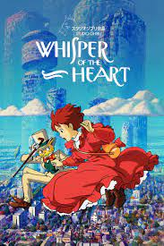
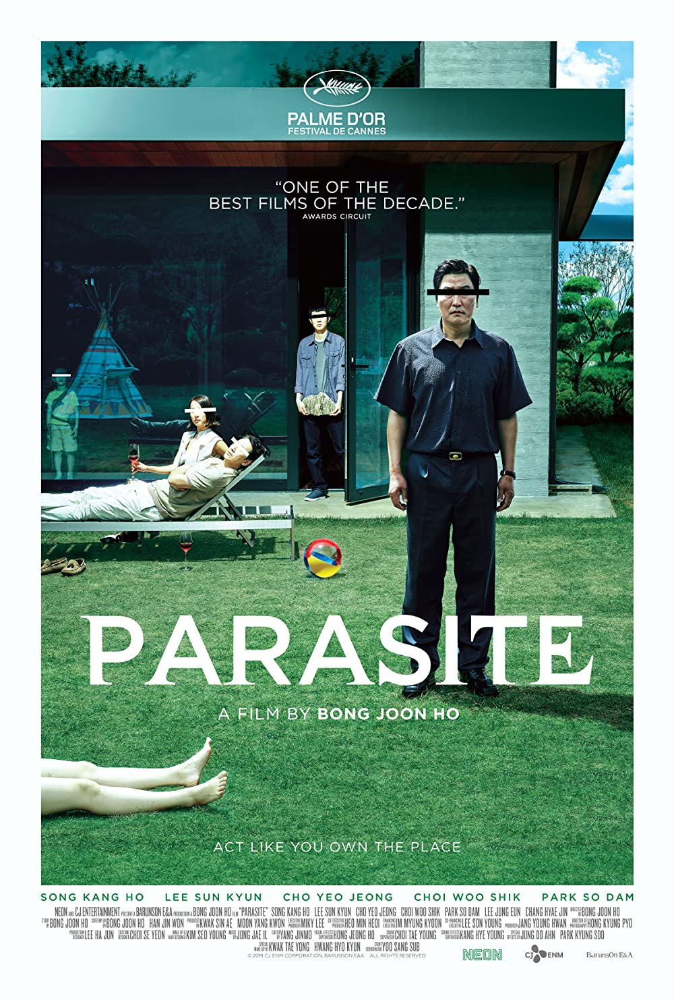
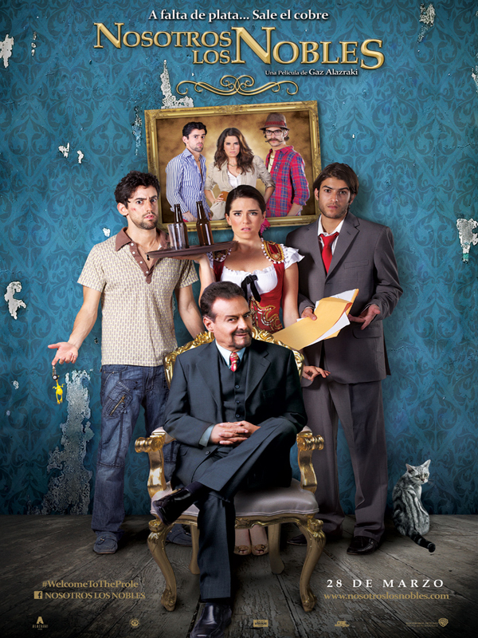

This is my favourite anime movie. I love the beautiful images and it has such a beautiful scenes and a history that will make you cry a river
Really cool drama-Thriller Korean movie, this one made me doubt about so many things around me.
This is without any doubt my favorite Mexican Movie of all time.
This is my favorite childhood movie, i remember i saw this movie a thousand times and i'm still having such a great memories with this movie.